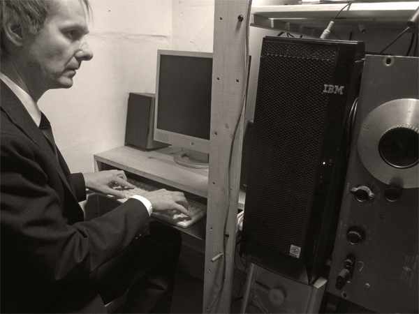

| Lodge For Utopian Science Guenther Padilla Projects |
4188 Angeles Vista Blvd Los Angeles, CA 90008 |
|
 |
||
PRESS RELEASE |
New York - "K5 as the Fifth State of Matter" is a 26-minute lecture and a 33-minute audio-visual performance of the electronic music "K5". Frank Holger Rothkamm will use a hammer as an instrument and nail 33 K5 CDs to the projection wall. A reception will follow. |
|